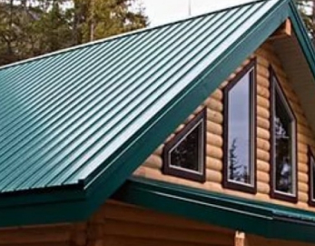

Информация для изучения
Двускатная крыша – это сложная, большая по площади строительная конструкция, требующая
профессионального подхода к проектированию и выполнению работ. Самые большие затраты идут на
стройматериалы для стропил, обрешетки, утеплителя, гидроизоляции, кровельного материала. Наш калькулятор
двухскатной крыши позволит Вам высчитать количество материала.
Использование калькулятора экономит время для проектирования крыши, и ваши деньги. Окончательный чертеж в 2D формате будет руководством при выполнении работ, а 3D визуализация даст представление о том, как будет выглядеть крыша. Прежде, чем ввести данные в онлайн калькулятор, необходимо иметь представление об элементах крыши.
Параметры стропил
Чтобы произвести расчет стропильной системы двухскатной крыши, нужно учесть:
нагрузку крыши;
шаг между стропилами.
вид кровельного покрытия.
Рекомендуемая ширина доски стропил:
100-150 мм при длине пролета не более 5 м, и при дополнительный подпорках.;
150-200 мм при длине пролета более 5 м, при шаге более 1 м, и если угол не большой.
Важно! Расстояние между стропилами двускатной крыши обычно устанавливают 1 м, но при уклоне крыши более 45 градусов шаг стропил можно увеличить до 1,4 м. При пологих крышах шаг делают 0,6-0,8 м.
Стропильные ноги крепятся на мауэрлат, который идет по периметру дома. Для него берется или доска параметрами 50х150 мм, или брус 150х150 мм (для распределения нагрузки).
Параметры обрешетки
Для металлочерепицы создается разреженная обрешетка доской, ширина которой 100мм, в толщина 30 мм. Доска набивается с шагом, который должен соответствовать продольной оси модуля металлочерепицы – 35 см (супермонтеррей).
Для гибкой черепицы обрешетку выполняют с большим шагом, так как поверх её будет укладываться ОСП или фанера сплошным ковром.
Важно! При выборе материалов обращать внимание на показатели влагостойкости и минимальной толщины.
При устройстве теплых крыш между гидроизоляцией и кровлей делается контробрешетка бруском, толщина которого должна быть 30-50мм.
Параметры кровельного покрытия
Чтобы выполнить расчет кровли двухскатной крыши, нужно знать размеры кровельного материала и величину нахлестов.
Металлочерепицу для жесткой кровли выпускают шириной 118 мм (рабочая 110), а вот длина может быть разной. Завод-изготовитель под заказ может нарезать любую длину.
Гибкая черепица для мягкой кровли имеет разные размеры, поэтому нужно смотреть конкретный материал
Что касается выбора утеплителя, то для России рекомендуется толщина минимум 100 мм, а правильная будет 150-200мм.
Использование калькулятора экономит время для проектирования крыши, и ваши деньги. Окончательный чертеж в 2D формате будет руководством при выполнении работ, а 3D визуализация даст представление о том, как будет выглядеть крыша. Прежде, чем ввести данные в онлайн калькулятор, необходимо иметь представление об элементах крыши.
Параметры стропил
Чтобы произвести расчет стропильной системы двухскатной крыши, нужно учесть:
нагрузку крыши;
шаг между стропилами.
вид кровельного покрытия.
Рекомендуемая ширина доски стропил:
100-150 мм при длине пролета не более 5 м, и при дополнительный подпорках.;
150-200 мм при длине пролета более 5 м, при шаге более 1 м, и если угол не большой.
Важно! Расстояние между стропилами двускатной крыши обычно устанавливают 1 м, но при уклоне крыши более 45 градусов шаг стропил можно увеличить до 1,4 м. При пологих крышах шаг делают 0,6-0,8 м.
Стропильные ноги крепятся на мауэрлат, который идет по периметру дома. Для него берется или доска параметрами 50х150 мм, или брус 150х150 мм (для распределения нагрузки).
Параметры обрешетки
Для металлочерепицы создается разреженная обрешетка доской, ширина которой 100мм, в толщина 30 мм. Доска набивается с шагом, который должен соответствовать продольной оси модуля металлочерепицы – 35 см (супермонтеррей).
Для гибкой черепицы обрешетку выполняют с большим шагом, так как поверх её будет укладываться ОСП или фанера сплошным ковром.
Важно! При выборе материалов обращать внимание на показатели влагостойкости и минимальной толщины.
При устройстве теплых крыш между гидроизоляцией и кровлей делается контробрешетка бруском, толщина которого должна быть 30-50мм.
Параметры кровельного покрытия
Чтобы выполнить расчет кровли двухскатной крыши, нужно знать размеры кровельного материала и величину нахлестов.
Металлочерепицу для жесткой кровли выпускают шириной 118 мм (рабочая 110), а вот длина может быть разной. Завод-изготовитель под заказ может нарезать любую длину.
Гибкая черепица для мягкой кровли имеет разные размеры, поэтому нужно смотреть конкретный материал
Что касается выбора утеплителя, то для России рекомендуется толщина минимум 100 мм, а правильная будет 150-200мм.

Профнастил. Он же профлист — гофрированные листы с высотой гофры 8-114 мм из оцинкованной
тонколистовой стали от 0,40 до 0,80 мм. Производятся в оцинкованном варианте и с дополнительным
полимерным покрытием. Обладает всеми достоинствами стальной кровли. Из недостатков можно отметить
шумность во время дождя и града и не презентабельный внешний вид. Впрочем последнее как говорится на
вкус и цвет. Монтируется оцинкованными кровельными саморезами в цвет профлиста с резиновой прокладкой.
Металлочерепица. Она состоит из оцинкованного железа, сплавов цветных металлов или алюминия,
которые покрывают сверху полимерным слоем.
Самый бюджетный вариант покрытия, который пользуется спросом — полиэстер. Но он подвержен различным повреждениям и подходит не для всех климатических зон. Его легко испортить даже при неправильной транспортировке. Срок службы всего 5-10 лет.
Более плотное и долговечное покрытие делают из матового полиэстера. Такая металлочерепица внешне похожа на керамическую и прослужит на 5 лет дольше. Металлочерепица универсальна и используется в строительстве всех малоэтажных построек. Рекомендуемый угол наклона кровли: от 12° до 45°.
Самый бюджетный вариант покрытия, который пользуется спросом — полиэстер. Но он подвержен различным повреждениям и подходит не для всех климатических зон. Его легко испортить даже при неправильной транспортировке. Срок службы всего 5-10 лет.
Более плотное и долговечное покрытие делают из матового полиэстера. Такая металлочерепица внешне похожа на керамическую и прослужит на 5 лет дольше. Металлочерепица универсальна и используется в строительстве всех малоэтажных построек. Рекомендуемый угол наклона кровли: от 12° до 45°.
Фальцевая кровля — пожалуй самый надежный вариант стальной кровли. Фальц — метод соединения
листов металла в замок, который является абсолютно герметичным и обеспечивает 100% защиты кровли от
протечки. Фальцевые кровли эстетичны, долговечны и признаны во всем мире. Срок службы фальца при
правильном монтаже составляет более 50 лет, а при использовании алюминия или меди прослужит и свыше 100
лет. В отличии от профлиста и металлочерепицы монтаж фальцевой кровли происходит без использования
кровельных саморезов, что обеспечивает отсутствие отверстий на полотне металла. Таким образом
исключается попадание влаги в подкровельное пространство.
Гибкая черепица. Гибкая черепица. Это кровельный материал, который изготавливают из
модифицированного или окисленного битума, стеклохолста и гранулята. Она состоит из небольших модулей
разных форм, которые укладывают внахлест.
Модули имеют особенность склеиваться при высоких температурах, что увеличивает гидроизоляцию. Но это осложняет частичный ремонт.
Подойдет для крыш со сложными конструкциями: куполообразными, коническими, сомкнутыми, многоскатными, многоуровневыми. Рекомендуемый угол наклона крыши: от 11˚до 90˚.
Модули имеют особенность склеиваться при высоких температурах, что увеличивает гидроизоляцию. Но это осложняет частичный ремонт.
Подойдет для крыш со сложными конструкциями: куполообразными, коническими, сомкнутыми, многоскатными, многоуровневыми. Рекомендуемый угол наклона крыши: от 11˚до 90˚.